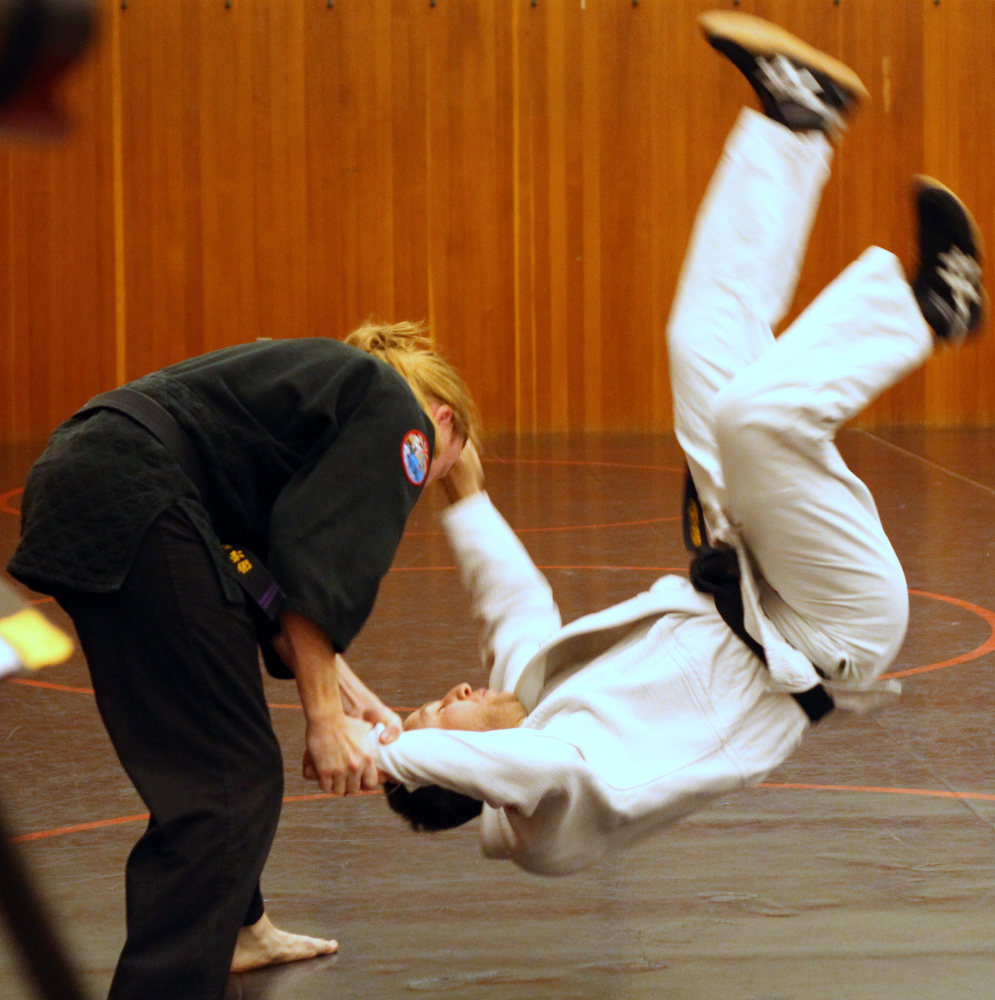

Tony started martial arts in 2013 at the MIT American Jiu Jitsu Dojo.
American Jiu Jitsu
appealed to Tony due to its focus on
practicality and applicable self-defense techniques.
Tony trained as many as 12 hours every week to earn first his instructor certification, and then his black belt in June of 2017.
From start to finish the process took 3 years and 9 months, which is to date the fastest any MIT AJJ member has earned their
black belt.

- Sukui Nage
- Teapot Irimi
- Ippon Seoi Nage
- Shiho Nage
- Kote Gaeshi
- Morote Seoi Nage
- Wheel Throw
Since earning his black belt, Tony has regularly taught classes for the MIT AJJ club. In 2019 Tony earned his
second-degree black belt, and is now working toward earning his third degree black belt. Check out his list of favorite techniques!